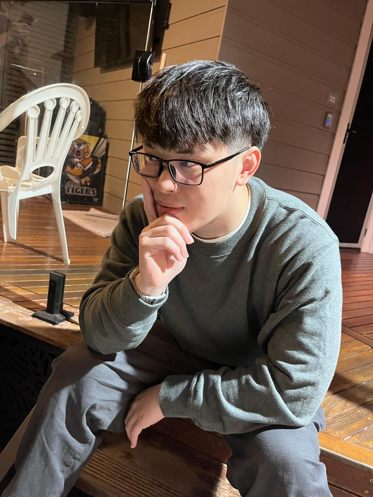

Welcome

whoami
Hi! My name is Andy and I'm a currently in my second year at the University of Technology. I'm studying a Bachelor of Information Systems and this website is for my course 31268 Web Systems. This website goes through my past achievements and experiences with computing, what i want to do with computing in the future, and a comment section detailing how i went about creating this website.
interests
- i like music! I play guitar and do vocals - currently im learning how to do music production
- the genres im into are pop, rnb, alternative, etc. and current favourite artist is keshi
- i like to mess around with technology and have recently been experimenting with different versions of linux (i.e. archlinux and bazzite)